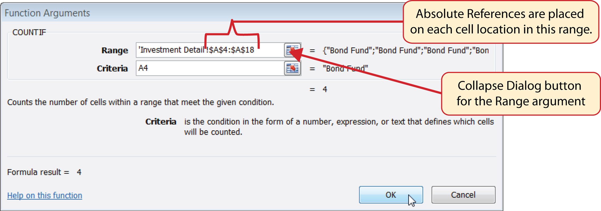
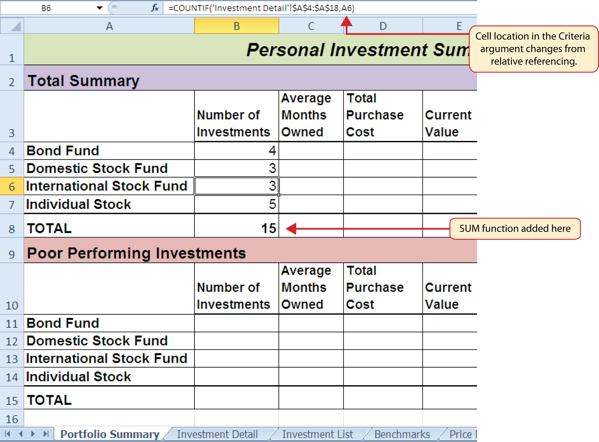
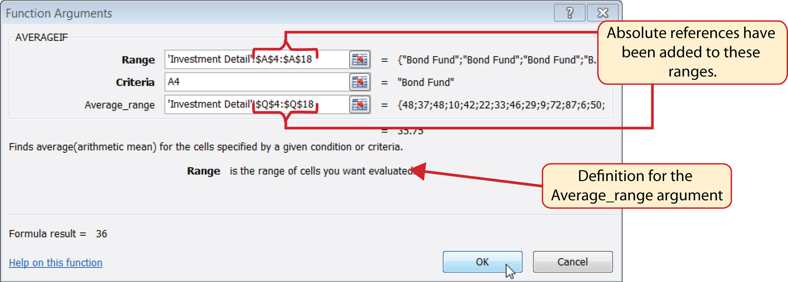
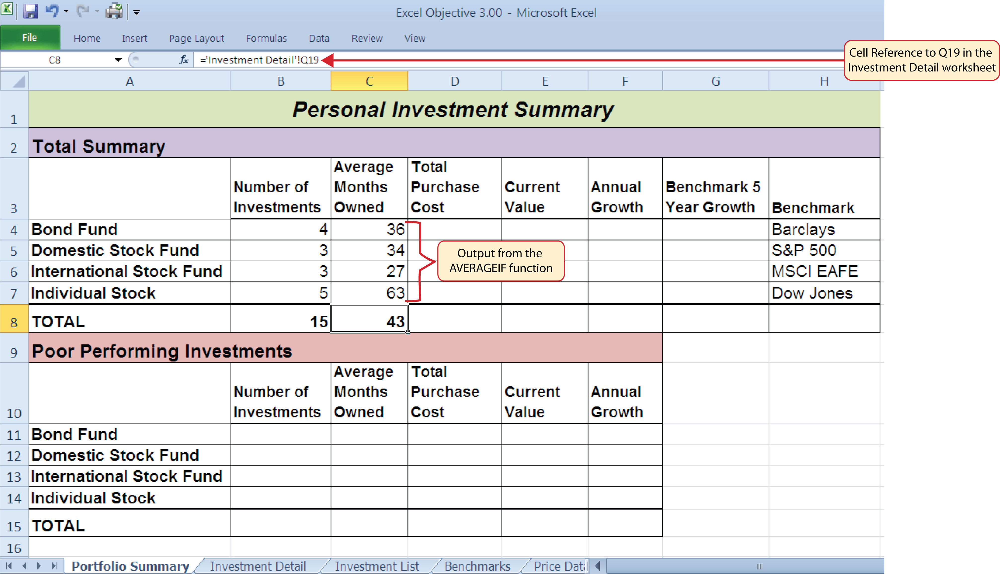
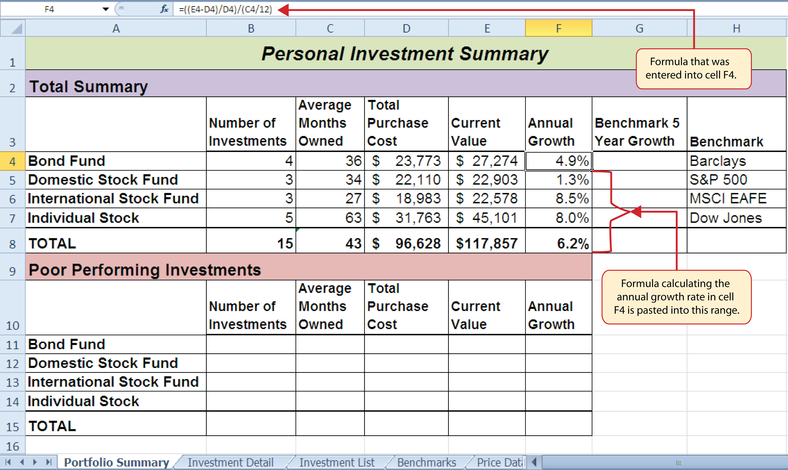
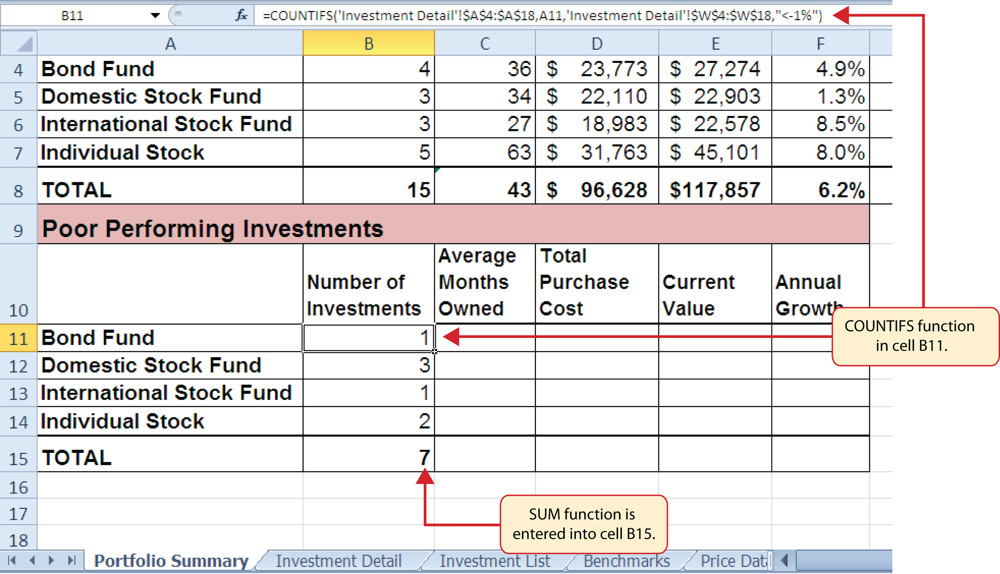
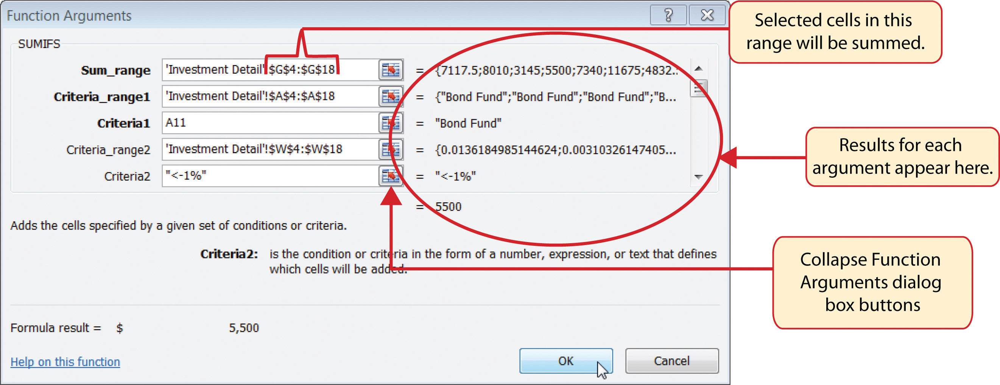
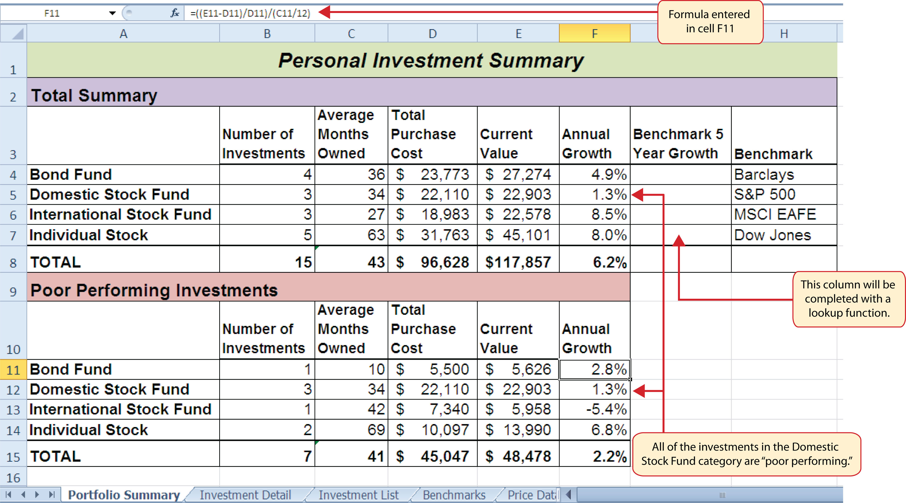
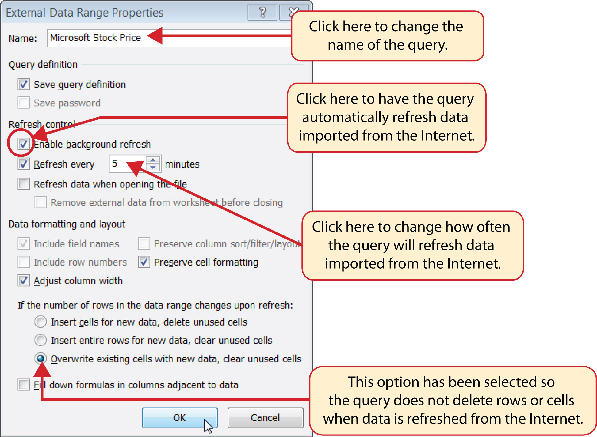

Going beyond the basic computational tools of Excel unlocks unlimited potential for processing and analyzing data. This chapter takes you beyond basic Excel computations by introducing logical functions and lookup functions. Logical functions are used to assess the contents within cell locations and produce custom outputs or mathematical computations. We will look at two types of logical functions in this chapter. The first is the IF function, which uses a logical test to evaluate the contents in a cell location. The OR and AND functions also use logical tests to evaluate the contents in a cell location and are often used within the IF function. The second type of logical function that we will look at are statistical IF functions. These functions combine the logical test feature of the IF function with the mathematical computation features of statistical functions (which were reviewed in Chapter 2 "Mathematical Computations"). The last section of this chapter demonstrates the use of two lookup functions. These functions are used to find data in one worksheet and display it in another. We will demonstrate the skills for this chapter through the construction of a personal investment portfolio. This theme builds on the personal budget project introduced in Chapter 2 "Mathematical Computations". In the personal budget project, we analyzed the impact of investing money in an account that provides a continuous rate of return. In this chapter we look at how you can decide where to invest your money and how to analyze the performance of those investments.
This section reviews the use of logical functions in Excel through the construction of an investment portfolio. Although it may seem that managing investments is a specialized career choice, the reality is that almost everyone will become an investor at some point in their lives. Many companies offer employees retirement savings benefits through 401(k) or 403(b)Employee retirement savings plans offered by businesses and by public and private institutions. These plans allow you to deduct money from your paycheck every month, tax-free, and invest it. plans. These plans allow you to deduct money from your paycheck every month, tax-free, and invest it. In addition to the tax benefits afforded by such plans, many employers match a percentage of your monthly savings or deposit money into your retirement account as an added form of compensation. When you sign up for these savings plans, your company will give you a list of options as to how your money can be invested, and you choose the type of investments you would like the company to make on your behalf. As a result of this process, you become an investor. Excel can be an extremely valuable tool to help you make these investment decisions and analyze the performance of the money you have invested.
Figure 3.1 "Completed Personal Investment Portfolio Workbook" shows the completed investment portfolio workbook that we will complete in this chapter. Similar to the personal budget example in Chapter 2 "Mathematical Computations", the Portfolio Summary worksheet contains a summary of the data entered or calculated in other worksheets in the workbook. This project begins by building on the Investment Detail worksheet.
Figure 3.1 Completed Personal Investment Portfolio Workbook
Follow-along file: Excel Objective 3.00
The Investment Detail worksheet shown in Figure 3.2 "Investment Detail Worksheet" contains the majority of the information used to create the Portfolio Summary worksheet shown in Figure 3.1 "Completed Personal Investment Portfolio Workbook". When you first open the worksheet, you will notice it is not possible to view all twenty-four columns on your computer screen. As you scroll to the right to view the rest of the columns, you will lose site of the row headings in Columns A and B. The headings in these columns show the investment that pertains to the data in Columns C through X. To solve this problem of viewing the row headings while scrolling through the remaining columns in the worksheet, we will use the Freeze Panes command.
Figure 3.2 Investment Detail Worksheet
The Freeze PanesAn Excel command that allows you to lock specific columns and rows in place while scrolling through a large worksheet. command allows you to scroll across the Investment Detail worksheet while keeping the row headings in Columns A and B locked in place. The following steps explain how to do this:
Figure 3.3 Freeze Panes Command

Once you click the Freeze Panes option shown in Figure 3.3 "Freeze Panes Command", Columns A and B are locked in place as you scroll through the columns in the worksheet. Since this is a large worksheet, you may find it easier to navigate the columns by using the arrow keys on your keyboard. However, since rows 1 and 2 contain merged cells, make sure a cell location is activated below Row 2 before you begin using the arrow keys. Figure 3.4 "Freeze Panes Command Activated on the Investment Detail Worksheet" shows the appearance of the Investment Detail worksheet after the Freeze Panes command has been activated. To deactivate the Freeze Panes command, click the Freeze Panes button again and select the Unfreeze Panes option.
Figure 3.4 Freeze Panes Command Activated on the Investment Detail Worksheet
Follow-along file: Continue with Excel Objective 3.00. (Use file Excel Objective 3.01 if starting here.)
We will begin developing the personal investment portfolio workbook by adding several formulas and functions. The formulas and functions we will add were illustrated in detail in Chapter 2 "Mathematical Computations". Therefore, the steps provided in this chapter will be brief. After the formulas and functions are added to the Investment Detail worksheet, we can add the logical and lookup functions. However, before proceeding, let’s review the investment type definitions in Table 3.1 "Investment Types in Column A of the Investment Detail Worksheet". Table 3.1 "Investment Types in Column A of the Investment Detail Worksheet" provides a definition for each of the investment types listed in Column A of the Investment Detail worksheet. This project assumes that the personal investment portfolio comprises four types of investments. The reason we include a variety of investment types in any portfolio is to manage our total risk, or potential of losing money. When building an investment portfolio, it is important to keep in mind that investments of all types can dramatically increase or decrease in value over a short period of time. Managing risk requires that your money is not concentrated in one type of investment.
Table 3.1 Investment Types in Column A of the Investment Detail Worksheet
| Category | Definition |
|---|---|
| Bond Fund | A mutual fund consisting of a variety of bonds. The benefit of buying shares of a fund as opposed to a specific bond is that doing so allows you to spread your investment over several bonds instead of concentrating your investment in just one bond. |
| Domestic Stock Fund | A mutual fund consisting of several domestic stocks. Buying shares of a stock mutual fund provides the benefit of investing your money over several stocks. |
| International Stock Fund | Same as a domestic stock fund but contains a variety of non-US or foreign stocks. |
| Individual Stock | The stock for one specific company. In addition to mutual funds, this chapter’s portfolio will include a few individual stocks for public companies. When you purchase shares of a specific company, such as IBM, you become a partial owner of that company. |
We will begin adding formulas and functions to the Investment Detail worksheet in sections. If you scroll across all the columns in the worksheet, you will notice the worksheet includes five distinct sections. Four of the five sections contain columns that need to be completed with formulas and functions before we can add the logical and lookup functions. Table 3.2 "Definitions for Columns A through G of the Investment Detail Worksheet" contains definitions for each of the columns in the Descriptive Information section (Columns A through D) and the Purchase section (Columns E through G). It will be helpful to understand the purpose of these columns as we complete this worksheet.
Table 3.2 Definitions for Columns A through G of the Investment Detail Worksheet
| Category | Definition |
|---|---|
| Investment Type | The type of investment with regard to bonds and stocks. A definition for each of the investment types used in this portfolio can be found in Table 3.1 "Investment Types in Column A of the Investment Detail Worksheet". |
| Symbol | The symbol that represents a mutual fund or stock. This symbol can be used to research the profile or current trading price on any website that provides stock quotes. |
| Description | The company name for an individual stock or a description of the type of investments made by a mutual fund. |
| Dividend/Yield | The amount of interest earned on a bond or bond fund or the amount of earnings distributed per share for an individual stock or stock fund. |
| Shares Purchased | The amount of shares purchased for a mutual fund or individual stock. |
| Purchase Price per Share | The price paid for the shares purchased for the mutual funds and individual stocks in the portfolio. |
| Cost of Purchase | The number of shares purchased multiplied by the purchase price per share. This represents your base investment and is used to determine how much money has been gained or lost. |
The Descriptive Information section of the Investment Detail worksheet (Columns A through D) contains only one blank column, which will be completed using a lookup function. Therefore, we will proceed to the Purchase section (Columns E through G) where the Cost of Purchase column is blank. The following steps explain how to enter the formula into this column:
Figure 3.5 "Completed Formula in the Cost of Purchase Column" shows the formula that was entered into cell G4 in the Purchase section of the Investment Detail worksheet. You can also see the results of the formula after it is pasted into the range G5:G18. The Paste Formulas option was used to paste the formula into this range so the borders would not be altered.
Figure 3.5 Completed Formula in the Cost of Purchase Column

Table 3.3 "Definitions for Columns H through K of the Investment Detail Worksheet" shows the definitions for the Current Value section (Columns H through K) of the Investment Detail worksheet.
Table 3.3 Definitions for Columns H through K of the Investment Detail Worksheet
| Category | Definition |
|---|---|
| Current Price | The current price of an individual stock or the current net asset value of a mutual fund. |
| Current Purchase Value | The number of shares purchased multiplied by the current price. |
| Estimated Dividend Payments | The estimated amount of money paid for the interest on a bond fund or the dividends paid on a stock or stock fund. The future value function is used to estimate these payments. For an actual portfolio, real monetary distributions can be added to the current purchase value of the investment to calculate the total value of an investment. |
| Current Investment Value | The current purchase value plus the estimated dividend payments. The current investment value is compared with the cost of purchase to determine how much money is gained or lost. |
We will add a basic formula to the Current Purchase Value and Current Investment Value columns. For the Estimated Dividend Payments column, we will use the FV (future value) function to estimate the dividend payments. The following explains how we add the FV function to the Estimated Dividend Payments column:
Figure 3.6 "Completed FV Function in the Estimated Dividend Payments Column" shows the completed FV function in cell J4 of the Estimated Dividend Payments column. It is important to reduce the decimal places to zero after you enter the function into cell J4. Excel does not display the result of the function until the decimal places are removed because of the column width.
Figure 3.6 Completed FV Function in the Estimated Dividend Payments Column
The following steps explain how to add the formulas for the Current Purchase Value and Current Investment Value columns:
Figure 3.7 "Completed Current Value Section of the Investment Detail Worksheet" shows the completed columns of the Current Value section in the Investment Detail worksheet. The formula used to calculate the Current Investment Value illustrates why we used the FV function to calculate the estimated dividend or interest payments for an investment. Investments that earn interest or dividends can achieve growth in two ways. The first way is through interest or dividend payments. The second way is through changes in the price paid for the investment. The formula used to calculate the Current Purchase Value is taking the number of shares purchased for each investment and multiplying it by the current market price. Therefore, the Current Investment Value takes into account any changes in the investment price by adding the purchase value at the current market price to any dividends or interest payments earned.
Figure 3.7 Completed Current Value Section of the Investment Detail Worksheet

Table 3.4 "Definitions for Columns L through R of the Investment Detail Worksheet" provides definitions for the Percent of Portfolio section of the Investment Detail worksheet (Columns L through R).
Table 3.4 Definitions for Columns L through R of the Investment Detail Worksheet
| Category | Definition |
|---|---|
| Current Percent of Portfolio | The current investment value divided by the total current value of the investment portfolio. |
| Target Percent of Portfolio | The planned percentage each investment is intended to have for the entire portfolio. |
| Current vs. Target | The difference between the Current Percent of Portfolio column and the Target Percent of Portfolio column. |
| Rebalance Indicator | Shows which investments do not match the target percentage of the portfolio. For example, as one investment increases in value due to an increase in market price, it will comprise a greater percentage of the portfolio. This may require that some shares of this asset be sold and invested in other areas that may have decreased in value. This is known as rebalancing the portfolio, and it helps you sell investments when prices are high and buy investments when prices are low. |
| Buy/Sell Indicator | Based on the results of the Rebalance Indicator, a logical function is used to indicate whether an investment should be purchased or sold. |
| Months Owned | Shows how many months an investment is owned. The length of ownership is expressed in terms of months since dividend payments on stock funds and interest payments on bond funds are distributed monthly. |
| Long/Short Indicator | Shows whether an investment has been owned long enough to qualify as a long-term investment, which is greater than twelve months. The amount of taxes paid on the amount of money gained for a short-term investment is greater than a long-term investment. Therefore, there is a tax incentive to hold investments for more than twelve months. |
The Percent of Portfolio section of the Investment Detail worksheet (Columns L through R) requires two formulas and one function. The following steps explain how we add them to the worksheet:
Figure 3.8 "Percent of Portfolio Section of the Investment Detail Worksheet" shows the results of adding two formulas and a function to the Percent of Portfolio section of the Investment Detail worksheet. Notice the absolute reference added to the cell reference for K19 in the formula in the Current Percent of Portfolio column.
Figure 3.8 Percent of Portfolio Section of the Investment Detail Worksheet
Table 3.5 "Definitions for Columns S through X of the Investment Detail Worksheet" provides definitions for the columns in the Performance Analysis section of the Investment Detail worksheet.
Table 3.5 Definitions for Columns S through X of the Investment Detail Worksheet
| Category | Definition |
|---|---|
| Unrealized Gain/Loss | The amount of money gained or lost on an investment. It is considered unrealized because the loss or gain does not actually occur until the investment is sold. |
| Percent Gain/Loss | The percentage increase or decrease based on the unrealized gain/loss and the purchase value of an investment. |
| Target Annual Growth Rate | The expected annual growth rate for an investment. All investments are expected to grow over time. The rate of growth depends on the amount of risk taken. Investments that are a higher risk are expected to pay a higher rate of return. |
| Actual Annual Growth Rate | The percentage gain/loss divided by the amount of time an investment is owned expressed in terms of years. |
| Target vs. Actual Growth Rate | The difference between the actual annual growth rate and the target annual growth rate. |
| Performance Indicator | A logical function will be used to indicate which investments are underperforming with respect to the target vs. actual growth rate. |
Most of the columns in the Performance Analysis section of the Investment Detail worksheet will be completed with formulas and functions. The following steps explain how we add them to the worksheet:
Figure 3.9 "Performance Analysis Section of the Investment Detail Worksheet" shows the results of the formulas added to the Performance Analysis section of the Investment Detail worksheet. This completes the required formulas and functions necessary to add before moving on to the logical and lookup functions of the chapter.
Figure 3.9 Performance Analysis Section of the Investment Detail Worksheet
Follow-along file: Continue with Excel Objective 3.00. (Use file Excel Objective 3.02 if starting here.)
A key component for the logical functions that will be demonstrated in this section is the logical testAn expression used to evaluate the contents of a cell location. The logical test typically contains comparison operators such as equal to (=), greater than (>), less than (<), and so on. The results of the logical test can be either true or false. An example of a logical test is B8 >= 25, which is read as “if the value in cell B8 is greater than or equal to 25.”. A logical test is used in logical functions to evaluate the contents of a cell location. The results of the logical test can be either true or false. For example, the logical test C7 = 25 (read as “if the value in cell C7 is equal to 25”) can be either true or false depending on the value that is entered into cell C7. A logical test can be constructed with a variety of comparison operators, as shown in Table 3.6 "Comparison Operator Symbols and Definitions". These comparison operators will be used in the logical test arguments for the logical functions demonstrated in this chapter.
Table 3.6 Comparison Operator Symbols and Definitions
| Symbol | Definition |
|---|---|
| = | Equal To |
| > | Greater Than |
| > | Less Than |
| < > | Not Equal To |
| > = | Greater Than or Equal To |
| < = | Less Than or Equal To |
A logical test will be used to evaluate the contents of a cell location in the Investment Detail worksheet. We will first demonstrate how the logical test is used to evaluate the contents of a cell location. Then we will use this logical test in the IF function, which will be demonstrated next. The following steps explain how the logical test is constructed:
Type the number 12. This completes the logical test, which is shown in Figure 3.10 "Logical Test Entered into the Investment Detail Worksheet". The logical test would be stated as: “If the value in cell Q4 is greater than or equal to 12.”
Figure 3.10 Logical Test Entered into the Investment Detail Worksheet
Figure 3.11 "Output of the Logical Test" shows the results of the logical test after it is pasted into the range R5:R18. Notice that for any values that are less than 12 in the range Q4:Q18, the logical test produces an output of FALSE.
Figure 3.11 Output of the Logical Test

Follow-along file: Continue with Excel Objective 3.00. (Use file Excel Objective 3.03 if starting here.)
The IF function is used to produce a custom output based on the results of a logical test. If the results of the logical test are TRUE, the IF function can display a specific number or text, or perform a calculation. If the results of the logical test are FALSE, the IF function can display a different number or text, or perform a different calculation. The arguments of the IF function are defined in Table 3.7 "Arguments for the IF Function".
Table 3.7 Arguments for the IF Function
| Argument | Definition |
|---|---|
| Logical_test | A test used to evaluate the contents of a cell location. This argument typically utilizes comparison operators, which are defined in Table 3.6 "Comparison Operator Symbols and Definitions". The results of the test can be either true or false. For example, the test C7>25 would be read as if C7 is greater than 25. If the number 30 is entered into cell C7, the logical test is true. If you are evaluating a cell that contains text data, the text in the logical test must be placed inside quotation marks. For example, if you wanted to test if the word Long is in cell C7, the logical test would be C7 = “Long”. |
| [Value_if_true] | The output that will be displayed by the function or the calculation that will be performed by the function if the results of the logical test are true. This argument can be defined with a formula, function, number, or text. However, when defining this argument with a text output such as the word Long, it must be placed inside quotation marks (“Long”). |
| [Value_if_false] | The output that will be displayed by the function or the calculation that will be performed by the function if the results of the logical test are false. This argument can be defined with a formula, function, number, or text. However, when defining this argument with a text output such as the word Long, it must be placed inside quotation marks (“Long”). |
We will use the IF function in the Percent of Portfolio section of the Investment Detail worksheet. We will use the logical test that was previously demonstrated within the IF function to determine if an investment has been held for a short or long period of time. For tax purposes, an investment is considered short-term if it is held less than twelve months. This requires the investor to pay a higher tax percentage for any profit earned on the investment. An investment held twelve months or longer is considered a long-term investment. The following explains how the IF function is used to identify which investments are long term or short term:
Click the IF function from the list of functions (see Figure 3.12 "Selecting the IF Function from the Function Library"). This opens the Function Arguments dialog box.
Figure 3.12 Selecting the IF Function from the Function Library
Type the number 12.
Figure 3.13 "Logical_Test Argument Defined" shows the appearance of the IF Function Arguments dialog box after defining the Logical_test argument. Notice that next to the Logical_test input box, Excel shows that the results of the test are true. This makes sense given that the value in cell Q4 is 48, which is greater than 12.
Figure 3.13 Logical_Test Argument Defined

Placing Text in Quotation Marks for Logical Functions
If you are using a logical function to evaluate text data in a cell location, or if you are using a logical function to output text data, the text must be placed inside quotation marks. For example, if you are using a logical function to evaluate whether the word Long is entered into cell B5, the logical test must appear as follows: B5= “Long”. If you omit the quotation marks, the function may produce an erroneous false result for the test.
Figure 3.14 "Completed Function Arguments Dialog Box for the IF Function" shows the completed Function Arguments dialog box for the IF function. Notice that the results of the function are displayed in the dialog box. Since the value in cell Q4 is greater than 12, the word Long will be displayed in cell R4.
Figure 3.14 Completed Function Arguments Dialog Box for the IF Function

Figure 3.15 "IF Function Output" shows the completed Long/Short Indicator column on the Investment Detail worksheet. Notice the word Short is displayed for any investment held less than twelve months.
Figure 3.15 IF Function Output

Follow-along file: Continue with Excel Objective 3.00. (Use file Excel Objective 3.04 if starting here.)
The OR function is similar to the IF function in that it uses a logical test to evaluate the contents of a cell location. However, the OR function allows you to define several logical tests as opposed to just one. If one of the logical tests is true, the output of the function will be the word TRUE. If all the logical tests are false, the output of the function will be the word FALSE. This differs from the IF function because the output of the function is only the word TRUE or the word FALSE. As a result, the OR function is commonly used within the IF function to enable specific outputs to be defined.
We will use the OR function in the Performance Indicator column on the Investment Detail worksheet. The purpose of this column is to identify any investment where either the Unrealized Gain/Loss is less than zero or the Target vs. Actual Growth Rate is less than –1%. We will use the function in the logical test of an IF function so we can define a specific output based on the results of the OR function. However, we will first demonstrate how the OR function works by itself, which is outlined in the following steps:
Figure 3.16 Completed OR Function by Itself

Figure 3.16 "Completed OR Function by Itself" shows the construction and result of the OR function by itself. Notice that the only output of the function is the word TRUE or the word FALSE. If either the Unrealized Gain/Loss is less than zero or the Target vs. Actual Growth Rate is less than −1%, the function shows the word TRUE. However, these descriptions will not be helpful for the person using this worksheet. Displaying the words OK or Warning would be far more helpful in identifying investments that need to be evaluated. We can do this if we use the OR function in the logical test argument of the IF function. The following steps explain how to accomplish this:
Figure 3.17 "OR Function in the Logical Test of the IF Function" shows the OR function within the logical_test argument of the IF function. The logical test of the IF function is now evaluating if the results of the OR function are true.
Figure 3.17 OR Function in the Logical Test of the IF Function
Follow-along file: Continue with Excel Objective 3.00. (Use file Excel Objective 3.05 if starting here.)
The AND function is almost identical to the OR function in that it is composed of only logical tests and produces one of two possible outputs: TRUE or FALSE. However, all logical tests defined for the AND function must be true in order to produce a TRUE output. If one logical test is false, the function will produce a FALSE output. We will use the AND function to complete the Buy/Sell Indicator column on the Investment Detail worksheet. This column will show either the word Buy or the words Hold or Sell based on the results of the logical test argument of an IF function. We will use the AND function to define the logical test argument of the IF function. The following steps explain how to accomplish this:
Type an equal sign (=) followed by the word TRUE. Do not enclose the word in quotation marks.
Figure 3.18 "AND Function Placed in the Logical Test of an IF Function" shows the appearance of the AND function that has been added to the logical test of the IF function. The AND function will produce a true output if the value in cell N4 is <−1% and the value in cell S4 is greater than or equal to 0.
Figure 3.18 AND Function Placed in the Logical Test of an IF Function
Figure 3.19 "Results of the AND Function in the Logical Test Argument of an IF Function" shows the results of the completed AND function within an IF function after it is copied and pasted into the range P5:P18.
Figure 3.19 Results of the AND Function in the Logical Test Argument of an IF Function
Follow-along file: Continue with Excel Objective 3.00. (Use file Excel Objective 3.06 if starting here.)
When constructing the IF function, the logical test can produce only two potential outcomes when evaluating the data in a cell. In addition, the function can produce only two possible outputs, which are defined in the value_if_true and value_if_false arguments. However, there may be situations when you need to test for several possible outcomes, which may require more than two possible outputs. To accomplish this, you need to create a nested IF functionUsed when more than two tests and two outputs are required when using the IF function. A nested IF function is when the value_if_true or value_if_false arguments of an IF function are defined with another IF function.. A nested IF function is when either the value_if_true or value_if_false arguments are defined with another IF function.
For the Personal Investment workbook, a nested IF function is required to complete the Rebalance Indicator column (Column O) on the Investment Detail worksheet (see Figure 3.19 "Results of the AND Function in the Logical Test Argument of an IF Function"). The purpose of this column is to indicate where the portfolio needs to be rebalanced. Looking at the Current vs. Target column (Column N) shown in Figure 3.19 "Results of the AND Function in the Logical Test Argument of an IF Function", you can see that several investments have a significant negative number where the investment value has fallen below the target percentage for the portfolio. Other investments have a significant positive number where the investment has exceeded the target percentage for the portfolio. For this portfolio, a number greater than 1% or less than –1% will be considered significant. Therefore, we will need to assess three possible outcomes when creating a logical test that evaluates the values in Column N. The first test will be if the value is greater than 1%. The second test will be if the value is less than –1%. The third test will be if both the first test and the second test are false. This is why we need to construct a nested IF function to produce the outputs in the Rebalance Indicator column. The following steps explain how to accomplish this:
Using Logical Functions to Evaluate Percentages
If you are using a logical function to evaluate percentages in a cell location, be sure to use the percent symbol when defining the logical test. For example, if you are testing cell location B5 to determine if the value is greater than 10%, the logical test should appear as follows: B5>10%. If you omit the percent sign, the logical test will evaluate cell B5 to see if the value is greater than 1000%. This may erroneously force the function to produce the value_if_false output. You can also convert the percentage to a decimal in the logical test. For example, in decimal form, the logical test can be constructed as follows: B5>.10.
Figure 3.20 "Completed Nested IF Function" shows how the completed nested IF function should appear in cell O4 of the Investment Detail worksheet. In addition, we see the results of the function after it was pasted into the range O5:O18. Notice that for any investment where the Current vs. Target value is between plus or minus 1%, the word OK appears.
Figure 3.20 Completed Nested IF Function
Use AND or OR functions within IF functions
The benefit of using the AND or OR functions within the IF function is that doing so reduces the need to construct lengthy nested IF functions. It becomes increasingly difficult to manage the accuracy of lengthy nested IF functions. The AND and OR functions allow you to test for a variety of conditions in a cell location, which can reduce the need to nest multiple IF functions. Examine the nested if function in cell O4 on the Investment Detail worksheet. Can you recreate this without nesting the IF function?
Follow-along file: Continue with Excel Objective 3.00. (Use file Excel Objective 3.07 if starting here.)
A feature related to the skills used to create logical functions is conditional formatting. Conditional formatsAn Excel feature that applies formatting commands to cell locations based on the cell contents. A basic conditional formatting rule will utilize a logical test to evaluate the contents of a cell location. If the results of the logical test are true, Excel will apply the designated formatting commands to the cell location. allow you to apply a variety of formatting treatments based on the contents of a cell location. A logical test similar to the ones used in the IF, AND, and OR functions is used to evaluate the contents of a cell and apply a designated formatting treatment. For example, looking at Figure 3.20 "Completed Nested IF Function", you will notice that the Unrealized Gain/Loss column is formatted using the accounting number format. Negative numbers are enclosed in parentheses. However, to make these numbers stand out, we can use conditional formatting to change the font color to red. We will do this for the Unrealized Gain/Loss and Percent Gain/Loss columns. The following steps explain how conditional formats are applied to the cell locations in these columns:
Click the New Rule command from the list of options (see Figure 3.21 "Conditional Formatting Options List"). This will open the New Formatting Rule dialog box.
Figure 3.21 Conditional Formatting Options List

Figure 3.22 "Format Cells Dialog Box" shows the Format Cells dialog box. This opens when the Format button is clicked on the New Formatting Rule dialog box. Notice the tabs running across the top of the dialog box. All formatting features in Excel are grouped by category, which can be accessed by clicking the related tab on the Format Cells dialog box. You will see some of the formatting commands in light grey. This indicates that these commands cannot be used with the Conditional Formatting feature. You can use the Format Cells dialog box to apply any formatting features by clicking the Format Cells dialog button on the Home tab of the Ribbon (see Figure 3.21 "Conditional Formatting Options List").
Figure 3.22 Format Cells Dialog Box
Open the Format Cells Dialog Box
Figure 3.23 "New Formatting Rule Dialog Box" shows the final settings for the New Formatting Rule dialog box. It is important to note that the “Format only cells that contain” option was selected in the New Formatting Rule dialog box to set a basic logical test that can be used to apply formatting commands automatically based on the values in cell locations.
Figure 3.23 New Formatting Rule Dialog Box

Figure 3.24 "Conditional Format Applied to the Range S4:T18" shows the results of the conditional formatting rule that was applied to the range S4:T18. Notice the font color is automatically changed to red for negative numbers.
Figure 3.24 Conditional Format Applied to the Range S4:T18
Assume the value in cell B12 is 25. Any value greater than or equal to 25 is OK, and any value below 25 is too low. Which of the following IF functions will provide an accurate result?
Assume the value in cell C4 is 5 and the value in D4 is 2. If the value in C4 is greater than 10, or if the value in D4 is greater than or equal to 2, the output should read OK. Otherwise, the output should read LOW. Which of the following IF functions will provide an accurate result?
Assume the value in cell A2 is 0 and the value in B2 is 1%. If the value in A2 is equal to 0 and the value in B2 is greater than 1%, then the output of the function should be OK. Otherwise, the output of the function should be REBAL. Which of the following IF functions will provide an accurate result?
Assume the value in cell E3 is 5. If the value in cell E3 is less than 0, the font color of the text should be red. If the value in cell E3 is greater than or equal to 0, the font color should remain black. When establishing a conditional format for cell E3, which rule type should be selected in the New Formatting Rule dialog box?
This section will demonstrate the use of statistical IF functions. Statistical IF functionsStatistical functions that provide the ability to evaluate the contents in a cell location before including it in a mathematical calculation. Cell locations can be selected from a range based on specific criteria or a logical test. provide you with the ability to evaluate the contents in a cell location before including them in a mathematical calculation. This allows you to selectively include targeted cell locations when executing statistical calculations such as sum, average, count, and so on. We will use several statistical IF functions to construct the Portfolio Summary worksheet shown in Figure 3.1 "Completed Personal Investment Portfolio Workbook", which contains two main sections. The Total Summary section (Rows 2 through 8) shows an overview for all investments in the portfolio by investment type. This will allow us to compare the growth performance among the Bond Funds, Domestic Stock Funds, and others. The Poor Performing Investments section (Rows 9 through 15) will provide an overview of poor performing investments by investment type. For the purposes of this exercise, we will define a poor performing investment as one where the growth rate is below the target growth rate by more than 1% (see Column W on the Investment Detail worksheet). The statistical IF functions will allow us to establish criteria to select targeted investments that can be included in the calculations for each section of the Portfolio Summary worksheet.
Follow-along file: Continue with Excel Objective 3.00. (Use file Excel Objective 3.08 if starting here.)
The COUNTIF function differs from the regular COUNT function in two ways. First, the regular COUNT function counts only the number of cells in a range that contain numeric data. The COUNTIF function counts the number of cells in a range that contain numeric or text data. Second, the COUNTIF function allows you to selectively count the cells in a range based on specific criteria.
The COUNTIF function contains two arguments: range and criteria. The range argument is defined with the range of cells that will be counted. The criteria argument is defined with the criteria that will be used to decide if a cell in the range should be included in the output of the function. The following steps explain how we can use the COUNTIF function to calculate the number of investments by investment type on the Portfolio Summary worksheet:
Click the COUNTIF function. This will open the Function Arguments dialog box.
Figure 3.25 Selecting the COUNTIF Function from the Function Library

Click the OK button at the bottom of the Function Arguments dialog box. Figure 3.26 "Completed Function Arguments Dialog Box for the COUNTIF Function" shows the completed Function Arguments dialog box for the COUNTIF function. Notice the absolute references that were placed on each cell location in the range that was used to define the Range argument. The Criteria argument is defined with the cell A4, which means the function will only count cell locations in the range A4:A18 where the contents in the cell match the contents in cell A4.
Figure 3.26 Completed Function Arguments Dialog Box for the COUNTIF Function
Figure 3.27 "COUNTIF Function Output in the Portfolio Summary Worksheet" shows the results of the COUNTIF function after it is pasted into the range B5:B7. Because of relative referencing, the cell location used in the criteria argument is changed after the function is pasted into the range B5:B7. For example, in cell B6, the function is counting the cell locations in the range A4:A18 where the contents match the contents of cell A6. This allows you to use the function to count the number of investments per investment type. As shown in the figure, the range B4:B7 now shows the number of investments in this portfolio by investment type.
Figure 3.27 COUNTIF Function Output in the Portfolio Summary Worksheet
Follow-along file: Continue with Excel Objective 3.00. (Use file Excel Objective 3.09 if starting here.)
The AVERAGEIF function performs the identical mathematical calculation as the regular AVERAGE function. However, similar to the COUNTIF function, it allows you to define criteria that will select cells in a range that will be used in the function output. The AVERAGEIF function differs from the COUNTIF function in that it allows you to define two cell ranges instead of one. The first range pertains to the criteria that will be used to select cells for the function output. The second range contains the values that will be used to calculate the arithmetic mean. Table 3.8 "Arguments for the AVERAGEIF and SUMIF Functions" provides definitions for the arguments contained in the AVERAGEIF and SUMIF functions.
Table 3.8 Arguments for the AVERAGEIF and SUMIF Functions
| Argument | Definition |
|---|---|
| Range | Range of cells that will be evaluated by the criteria argument. |
| Criteria | Criteria that will be used to evaluate the range of cells that is used to define the Range argument. This argument can be defined with a cell location, formula, number, text, or logical test. Note that text and logical tests must be enclosed in quotation marks. |
| [Average_range] or [Sum_range] | Range of cells that will be used to calculate the average when using the AVERAGEIF function, or the sum when using the SUMIF function. This argument is enclosed in brackets because it does not always need to be defined. If this argument is omitted, the function will use the range of cells in the Range argument to calculate the output. |
The AVERAGEIF function will be used in the Portfolio Summary worksheet to calculate the average length of time that investments for each investment type are held. The following steps explain how to add this function to the worksheet:
Click the OK button at the bottom of the Function Arguments dialog box.
Figure 3.28 "Defined Arguments for the AVERAGEIF Function" shows the Function Arguments dialog box for the AVERAGEIF function that will be input into cell C4. Notice that absolute references are placed on the cell locations used to define the Range and Average_range arguments. The function will evaluate the cells in the range A4:A18 using the value that exists in cell A4 on the Portfolio Summary worksheet. When a cell in the range A4:A18 meets the criteria, the function will pull the cell location in the same row from the range Q4:Q18 and include it in the average calculation.
Figure 3.28 Defined Arguments for the AVERAGEIF Function
Figure 3.29 "AVERAGEIF Function Output on the Portfolio Summary Worksheet" shows the output of the AVERAGEIF function in the Average Months Owned column on the Portfolio Summary worksheet. The function calculates the average months owned in Column Q on the Investment Detail worksheet where the investment type is equal to the description entered in the range A4:A7 on the Portfolio Summary worksheet.
Figure 3.29 AVERAGEIF Function Output on the Portfolio Summary Worksheet
Matching Row Numbers for the Range and Average_range (or Sum_range) Arguments
When defining the Average_range argument for the AVERAGEIF function or the Sum_range argument for the SUMIF function, it is good practice to make sure the row numbers match the row numbers used in the Range argument. For example, if the Range argument is defined with the range A4:A12, the range used to define the Average_range or Sum_range argument should begin with Row 4 and end with Row 12. If the row numbers in these two arguments do not match, Excel will include the values only in the rows used to define the Range argument. For example, if the Range argument is defined with the range A4:A12 and the Average_range (or Sum_range) argument is defined with the range D4:D20, only the values in cells D4:D12 will be included in the function output.
Follow-along file: Continue with Excel Objective 3.00. (Use file Excel Objective 3.10 if starting here.)
The SUMIF function performs the same mathematical calculation as the regular SUM function. However, similar to the AVERAGEIF function, this function allows you to select specific cells from a range that will be used in the output. The arguments for the SUMIF function are identical to the AVERAGEIF function (see Table 3.8 "Arguments for the AVERAGEIF and SUMIF Functions"). We will use the SUMIF function in two columns on the Portfolio Summary worksheet. The first column will show the total investment cost for each investment type. The second column will show the total current value for each investment type. This will allow us to calculate the total annual growth rate for each investment type. The following steps explain how we will use this function to complete the first column:
Click the Collapse Dialog button next to the Sum_range argument on the Function Arguments dialog box (see Figure 3.30 "Defined Arguments for the First SUMIF Function on the Portfolio Summary Worksheet").
Figure 3.30 Defined Arguments for the First SUMIF Function on the Portfolio Summary Worksheet

Figure 3.30 "Defined Arguments for the First SUMIF Function on the Portfolio Summary Worksheet" shows how the SUMIF arguments were defined for the Total Purchase Cost column on the Portfolio Summary worksheet. Notice that the row numbers are identical in the range used to define the Range argument and the Sum_range argument.
The following steps explain how to add the SUMIF function to the second column on the Portfolio Summary worksheet:
Figure 3.31 "SUMIF Function Outputs in the Portfolio Summary Worksheet" shows the results of the SUMIF function in the Total Purchase Cost and Current Value columns in the Portfolio Summary worksheet.
Figure 3.31 SUMIF Function Outputs in the Portfolio Summary Worksheet

A formula can now be added to show the annual growth for each investment category. The following steps explain how to add this formula to the Portfolio Summary worksheet:
Figure 3.32 "Completed Annual Growth Column in the Portfolio Summary Worksheet" shows the results of the statistical IF functions that were added to the Total Summary section of the Portfolio Summary worksheet. The statistical IF functions used on this worksheet allowed us to group the details in the Investment Detail worksheet by investment type. Once this was accomplished, we added a formula to show the annual growth rate by investment type.
Figure 3.32 Completed Annual Growth Column in the Portfolio Summary Worksheet
Follow-along file: Continue with Excel Objective 3.00. (Use file Excel Objective 3.11 if starting here.)
Up to this point, the statistical IF functions that were demonstrated provided the ability to define one criteria or logical test used to select cells from a targeted range. The next set of statistical functions that will be demonstrated provides the ability to define multiple sets of criteria for selecting cells from a targeted range. We will begin with the COUNTIFS function.
It is easy to distinguish the difference between a statistical IF function that allows one criteria argument to be defined and one that allows multiple criteria arguments. If the IF at the end of the function name is plural, you can define multiple sets of criteria arguments. Therefore, the COUNTIFS function provides the option of defining multiple sets of criteria for selecting cells from a targeted range that will be used in the function output. The arguments for the COUNTIFS function are established in pairs. For example, the first arguments for the function are Criteria_range1 and Criteria1. The function will use the Criteria1 argument to select cells in the Criteria_range1 argument. A second pair of arguments, Criteria_range2 and Criteria2, can be defined to select a subset of cell locations that were selected in the Criteria_range1 and Criteria1 arguments. This process can be repeated for several pairs of criteria arguments. We will continue to work on the Portfolio Summary worksheet by adding the COUNTIFS function to count the number of poor performing investments by investment type. The following steps explain how to add this function to the worksheet:
Use Statistical IF Functions for a Summary Worksheet
When creating a summary worksheet that summarizes detailed data from other worksheets, such as the Portfolio Summary worksheet in Figure 3.32 "Completed Annual Growth Column in the Portfolio Summary Worksheet", it is best to use statistical IF functions. If data is added to the detailed worksheet that is being summarized, the statistical IF functions will automatically include the new data in the summary worksheet. For example, suppose a row is added below Row 7 on the Investment Detail worksheet (see Figure 3.24 "Conditional Format Applied to the Range S4:T18") and another bond investment is added. The statistical IF functions will automatically pick up the new investment and include it in the Portfolio Summary worksheet. If regular statistical functions or formulas are used, the summary worksheet can easily become inaccurate if new data is added to the detailed worksheet or if the sort order is changed.
Figure 3.33 "Defined Arguments for the COUNTIFS Function" shows the completed arguments for the COUNTIFS function in the Function Arguments dialog box. Notice the scroll bar that appears on the right side of the Function Arguments dialog box. This allows you to scroll through and define multiple pairs of criteria arguments for the function.
Figure 3.33 Defined Arguments for the COUNTIFS Function

Figure 3.34 "Outputs for the COUNTIFS Functions" shows the output of the COUNTIFS function on the Portfolio Summary worksheet. The criteria established for the COUNTIFS function shows that there are a total of seven investments that are underperforming in the portfolio.
Figure 3.34 Outputs for the COUNTIFS Functions
Follow-along file: Continue with Excel Objective 3.00. (Use file Excel Objective 3.12 if starting here.)
The AVERAGEIFS function is similar to the COUNTIFS function in that multiple sets of criteria can be defined instead of one. However, the arguments for the AVERAGEIFS function are slightly different from those for the COUNTIFS function. Table 3.9 "Arguments for the AVERAGEIFS and SUMIFS Functions" provides definitions for the arguments of the AVERAGEIFS and the SUMIFS functions.
Table 3.9 Arguments for the AVERAGEIFS and SUMIFS Functions
| Argument | Definition |
|---|---|
| Average_range or Sum_range | Range of cells that contain values to be averaged when using the AVERAGEIFS function or summed when using the SUMIFS function. Note that the AVERAGEIFS or SUMIFS functions will only select values from the range used to define this argument if all criteria pairs are true. |
| Criteria_range1 | Range of cells that will be evaluated based on the Criteria1 argument to determine which cells in the Average_range or Sum_range arguments will be included in the output of the function. |
| Criteria1 | Criteria that will be used to evaluate the range of cells used to define the Criteria_range1 argument. This argument can be defined with a cell location, formula, number, text, or logical test. Note that text and logical tests must be enclosed in quotation marks. |
| Criteria_range2 | Optional argument that defines a second range of cells that will be evaluated based on the Criteria2 argument to determine which cells in the Average_range or Sum_range arguments will be included in the output of the function. Additional Criteria_rangeN arguments can be defined as needed. |
| Criteria2 | Criteria that will be used to evaluate the range of cells used to define the Criteria_range2 argument. This argument can be defined with a cell location, formula, number, text, or logical test. Note that text and logical tests must be enclosed in quotation marks. Additional CriteriaN arguments can be defined as needed. |
The AVERAGEIFS function will be used to calculate the average months of ownership for poor performing investments in the portfolio. The following steps explain how to add this function to the Portfolio Summary worksheet:
Copy the function in cell C11 and paste it into the range C12:C14 using the Paste Formulas command.
Figure 3.35 "Completed Arguments for the AVERAGEIFS Function" shows the defined arguments for the AVERAGEIFS function. Notice that two sets of criteria arguments are defined. Values that meet all criteria defined in the function will be selected from the range Q4:Q18.
Figure 3.35 Completed Arguments for the AVERAGEIFS Function

Figure 3.36 "Results of the AVERAGEIFS Function" shows the results of the AVERAGEIFS function in the Portfolio Summary worksheet. The function shows the average months of ownership for the poor performing investments by investment type.
Figure 3.36 Results of the AVERAGEIFS Function

Follow-along file: Continue with Excel Objective 3.00. (Use file Excel Objective 3.13 if starting here.)
The SUMIFS function is similar to the AVERAGEIFS function in that multiple criteria arguments can be defined to select cells from a targeted range (see Table 3.9 "Arguments for the AVERAGEIFS and SUMIFS Functions"). The function will use the selected cells from this targeted range to calculate a total or sum. The SUMIFS function will be used to complete the Total Purchase Cost and Current Value columns in the Poor Performing Investments section of the Portfolio Summary worksheet. The following steps explain how to construct this function for the Total Purchase Cost column:
Figure 3.37 "Completed Arguments for the SUMIFS Function" shows the defined arguments for the SUMIFS function. Values that meet all criteria defined in the function will be selected from the range G4:G18. Notice that the results for each argument of the function are shown along the right side of the Collapse Dialog buttons.
Figure 3.37 Completed Arguments for the SUMIFS Function
Figure 3.38 "SUMIFS Function Output for the Total Purchase Cost Column" shows the results of the SUMIFS function used to complete the Total Purchase Cost column. In total, over $45,000 was invested in funds and stocks that are not meeting the performance goals of the portfolio.
Figure 3.38 SUMIFS Function Output for the Total Purchase Cost Column

In addition to the Total Purchase Cost column, the SUMIFS function will also be used to complete the Current Value column for the Poor Performing Investments section on the Portfolio Summary worksheet. The following steps explain how to add the function to the worksheet to complete this column:
Figure 3.39 Completed Function Arguments Dialog Box for the Second SUMIFS Function

Figure 3.40 SUMIFS Function Output for the Current Value Column

Now that the Total Purchase Cost and Current Value columns are completed for the Poor Performing Investments section on the Portfolio Summary worksheet, we can add a formula to show the annual growth rate by investment type. Since this is the same formula that was used in the Total Summary section of the Portfolio Summary worksheet, we can just copy and paste it. The following steps explain how to do this:
Error Message for Statistical IF Functions
If you receive an error message when attempting to enter a statistical IF function into a cell location, check to make sure any criteria using a comparison operator is enclosed in quotation marks. For example, if you are assessing a range of cells to see if the values are greater than or equal to zero, you must define the Criteria argument as follows: “>=0”. If you do not use the quotation marks, Excel will not accept the function in the cell location and will display an error message.
Figure 3.41 "Completed Poor Performing Investments Section of the Portfolio Summary Worksheet" shows the completed Poor Performing Investments section on the Portfolio Summary worksheet. Notice that even though an investment is considered “poor performing” it does not mean that money is lost on the investment. As shown in the figure, only one investment in the International Stock Fund category is losing money, with an annual growth rate of −5.4%. However, the total annual growth rate for all investments in the Poor Performing section is 2.2% (see cell F15). This is less than half the growth rate for the overall portfolio, which is 6.2% (see cell F8). A final observation is that all the investments in the Domestic Stock Fund category are “poor performing.” The same number of investments in the Total Summary section appears in the Poor Performing Investments section. This completes the Portfolio Summary worksheet with the exception of one column. We will complete this column in the next section with a lookup function.
Figure 3.41 Completed Poor Performing Investments Section of the Portfolio Summary Worksheet
Consider the following SUMIF function: =SUMIF(B2:B10,A1,E2:E20). What cell range will be used to compute the output for the function?
Which of the following is true with respect to the COUNTIF function?
If you wanted to calculate the average of the values contained in the range B5:B20 based on any values in the range E5:E20 with a value greater than 5, which of the following functions would provide an accurate result?
Suppose you wanted to sum the values in the range C3:C15 where the values in B3:B15 are equal to the word Bond and where the values in the range D3:D15 are greater than 3%. Which of the following functions would provide an accurate result?
The final section of this chapter addresses lookup functions. Lookup functionsFunctions that are used to search for and display data located in an existing worksheet or in other worksheets or workbooks. are typically used to search for and display data located in other worksheets or workbooks. The two lookup functions we will use in our example of the personal investment portfolio are the VLOOKUP and HLOOKUP functions. In addition to demonstrating these functions, we will also show how we can enhance the personal investment portfolio workbook with a web query. Web queries are used to bring live or current data into a worksheet from a website.
Follow-along file: Continue with Excel Objective 3.00. (Use file Excel Objective 3.14 if starting here.)
The VLOOKUP function is typically used to access and display data located in another worksheet or workbook. The function can also be used to access and display data located in the same worksheet. This is a very powerful and versatile function because it eliminates the need to copy or recreate data that exists in other worksheets or workbooks. It is called a VLOOKUP function because the function will search vertically down the first column of a range of cells to find what is called a lookup value. This process is very similar to the statistical IF functions in Section 3.2 "Statistical IF Functions". You will recall that these functions used criteria to select cells from a range that was used in the mathematical output. The VLOOKUP function is essentially performing the same process; however, instead of selecting multiple cells from a range, the function is only looking for one specific cell location. Once the function finds the specific cell location, it will display the contents of that cell location or another cell location in the range. Before using the VLOOKUP function in the personal investment portfolio workbook, it is strongly recommended that you carefully read the definitions for the function arguments listed in Table 3.10 "Arguments for the VLOOKUP Function".
Table 3.10 Arguments for the VLOOKUP Function
| Argument | Definition |
|---|---|
| Lookup_value | This argument is typically defined with a cell location, number, or text. Text data must be enclosed in quotation marks for this argument. The function will search for the criteria entered into this argument in the first column of the range used to define the Table_array argument. For example, if the word Hat is used to define this argument, the function will search for the word Hat in the first column of the range used to define the Table_array argument. |
| Table_array | Range of cells that contain data you wish the VLOOKUP function to search though (Lookup_value) and display. This cell range must contain the criteria used to define the Lookup_value in the first column. For example, if the range A2:D15 is used to define this argument, the criteria used to define the Lookup_value argument must exist in Column A. |
| Col_index_num | This is the column index number argument. It is defined with the number of columns to the right of the first column in the range used to define the Table_array argument that contains the data you wish to display. For example, suppose the data you wish the function to display is contained in Column C. If the range used to define the Table_array argument is A2:D15, then the column index number will be 3. Counting the columns to the right of the first column in this range, Column A would be 1, Column B would be 2, and Column C would be 3. It is important to remember to count the first column in the table array range as 1. |
| [Range_lookup] | This argument is defined with either the word TRUE or the word FALSE. When this argument is defined with the word FALSE, the function will look for an exact match to the criteria used to define the Lookup_value argument in the first column of the table array range. It is important to note the function will search the entire range to find a match. If this argument is defined with the word TRUE, the function will look for a value that is an exact match or the closest match that is less than the lookup value. For example, if the lookup value is 80 and the highest value in the first column of the table array range is a 78, the function will consider 78 a match for the number 80. However, if the lookup value is 80 and the lowest number in the first column of the table array range is 85, the function will produce an error. This is because the number 80 and any value less than 80 do not exist in the first column of the table array range. It is important to note that if you define this argument with the word TRUE, the data in the table array range must be sorted in ascending order. This is because the function will stop searching for a match once the value in the first column exceeds the lookup value. If the data in the table array range is not sorted, the function can either produce an error code or display an erroneous result. This argument is in brackets because if it is not defined it will automatically be defined with the word TRUE. |
Using a TRUE Range Lookup for VLOOKUP and HLOOKUP
If you are defining the Range_lookup argument with the word TRUE for either the VLOOKUP or HLOOKUP function, the range used to define the Table_array argument must be sorted in ascending order. For the VLOOKUP function, the table array range must be sorted from smallest to largest or from A to Z based on the values in the first column. For the HLOOKUP function, the table array range must be sorted from left to right based on the values in the first row, from smallest to largest or A to Z.
You may have noticed that on the Investment Detail worksheet, the Description column is blank (see Figure 3.2 "Investment Detail Worksheet"). Descriptions for several investments are included in the workbook in the Investment List worksheet as shown in Figure 3.42 "Investment List Worksheet". The VLOOKUP function will be used to search for a specific symbol in Column A of the Investment List worksheet and display the description for that symbol located in Column B. The following steps explain how to accomplish this:
Figure 3.42 Investment List Worksheet

Figure 3.43 "Completed Function Arguments Dialog Box for the VLOOKUP Function" shows the completed Function Arguments dialog box for the VLOOKUP function. Notice that the Range_lookup argument is defined with the word FALSE. This will direct the function to search for an exact match to the lookup value and will also direct the function to search the entire first column of the table array range. Finally, it is important to note the absolute reference on the table array range. This will prevent the table array range from changing when the function is pasted into other cell locations.
Figure 3.43 Completed Function Arguments Dialog Box for the VLOOKUP Function
Figure 3.44 "Results of the VLOOKUP Function in the Investment Detail Worksheet" shows the results of the VLOOKUP function in the Investment Detail worksheet. The function is searching for each symbol in Column B of the Investment Detail worksheet in Column A of the Investment List worksheet. When the function finds a match, it will display whatever is in the cell location two columns to the right, or Column B, in the Investment List worksheet. For example, the symbol VDMIX, which is in cell B8 on the Investment Detail worksheet (see Figure 3.44 "Results of the VLOOKUP Function in the Investment Detail Worksheet"), is also in cell A15 on the Investment List worksheet (see Figure 3.42 "Investment List Worksheet"). As a result, the function is displaying whatever is in cell B15 on the Investment List worksheet, which is the description “Developed Markets.”
Figure 3.44 Results of the VLOOKUP Function in the Investment Detail Worksheet

Absolute References on the Table Array Range for the VLOOKUP and HLOOKUP Functions
If you are copying and pasting a VLOOKUP or HLOOKUP function, you will most likely need to place an absolute reference on the range used to define the Table_array argument. The table array range will change because of relative referencing once the function is pasted to new cell locations. This may result in an error output for either the VLOOKUP or HLOOKUP function. This is because the function will not be able to find the lookup value since the range has been adjusted. If you are defining the Range_lookup argument with the word TRUE, an adjustment in the table array range may result in an erroneous output.
Follow-along file: Continue with Excel Objective 3.00. (Use file Excel Objective 3.15 if starting here.)
The HLOOKUP function serves the same purpose as the VLOOKUP function. The HLOOKUP function can be used to display data from another worksheet or workbook. However, instead of searching for the lookup value vertically down the first column of the table array range, the HLOOKUP function searches horizontally across the first row of the table array range. When the function finds a match for the lookup value, it will display the contents in a cell location based on a row index number. This number designates how many rows below the first row of the table array range the function should display. Table 3.11 "Arguments for the HLOOKUP Function" provides a definition for each argument of the HLOOKUP function. It is best to review the definitions of these arguments carefully before using the function.
Table 3.11 Arguments for the HLOOKUP Function
| Argument | Definition |
|---|---|
| Lookup_value | This argument is typically defined with a cell location, number, or text. Text data must be enclosed in quotation marks for this argument. The function will search for the criteria entered into this argument in the first row of the range used to define the Table_array argument. For example, if the word Hat is used to define this argument, the function will search for the word Hat in the first row of the range used to define the Table_array argument. |
| Table_array | Range of cells that contain data you wish the HLOOKUP function to search though (Lookup_value) and display. This cell range must contain the criteria used to define the Lookup_value in the first row. For example, if the range A2:D15 is used to define this argument, the criteria used to define the Lookup_value argument must exist in Row 2. |
| Row_index_num | This is the row index number argument. It is defined with the number of rows below the first row in the range used to define the Table_array argument that contains the data you wish to display. For example, suppose the data you wish the function to display is contained in Row 5. If the range used to define the Table_array argument is A2:D15, then the column index number will be 4. Counting the rows below the first row in this range, Row 2 would be 1, Row 3 would be 2, Row 4 would be 3, and Row 5 would be 4. It is important to remember to count the first row in the table array range as 1. |
| [Range_lookup] | This argument is defined with either the word TRUE or the word FALSE. When this argument is defined with the word FALSE, the function will look for an exact match to the criteria used to define the Lookup_value argument in the first row of the table array range. It is important to note the function will search the entire range to find a match. If this argument is defined with the word TRUE, the function will look for a value that is an exact match or the closest match that is less than the lookup value. For example, if the lookup value is 80 and the highest value in the first row of the table array range is a 78, the function will consider 78 a match for the number 80. However, if the lookup value is 80 and the lowest number in the first row of the table array range is 85, the function will produce an error. This is because the number 80 and any value less than 80 do not exist in the first row of the table array range. It is important to note that if you define this argument with the word TRUE, the data in the table array range must be sorted based on the values in the first row in ascending order from left to right. This is because the function will stop searching for a match once the value in the first row exceeds the lookup value. If the data in the table array range is not sorted, the function can either produce an error code or display an erroneous result. This argument is in brackets because if it is not defined it will automatically be defined with the word TRUE. |
The HLOOKUP function will be used on the Portfolio Summary worksheet to display the benchmark growth rates in the range G4:G7. A benchmarkA value or qualitative example that can be used as a standard point of comparison. Results that are higher or better than a benchmark are typically considered positive, whereas results that are lower or worse than the benchmark are typically considered negative. is a value that can be used as a standard point of comparison. The Benchmarks worksheet contains growth rates at different year intervals for the benchmarks that will be used to compare the performance for each investment type (see Figure 3.45 "Benchmarks Worksheet"). For the purposes of this workbook, we will be comparing the growth rates for each investment type to the 5-year average growth rate for the benchmarks categories listed in the range H4:H7. The following steps explain how to construct the HLOOKUP function to display the 5-year benchmark values in the Portfolio Summary worksheet:
Figure 3.45 Benchmarks Worksheet
Figure 3.46 "Completed Function Arguments Dialog Box for the HLOOKUP Function" shows the completed Function Arguments dialog box for the HLOOKUP function. The row index number 4 indicates that the function will display the contents of the cell location in the fourth row of the table array range.
Figure 3.46 Completed Function Arguments Dialog Box for the HLOOKUP Function
Figure 3.47 "Completed Portfolio Summary Worksheet" shows the output of the HLOOKUP function. Notice that the output of the function in cell G4 is 6.0%. This is because the lookup value was defined with the entry in cell H4, which is the Barclays index. Looking at Figure 3.45 "Benchmarks Worksheet", if you count the first row of the table array range as Row 1, the value 6.03% is the fourth row in the Barclays column. Since the values in Column G on the Portfolio Summary worksheet are set to 1 decimal place, the value is displayed as 6.0%.
Figure 3.47 Completed Portfolio Summary Worksheet
#N/A and #REF! Errors with Lookup Functions
If you receive the #N/A error code when using the VLOOKUP or HLOOKUP function, it indicates that Excel cannot find the lookup value in the table array range. Check that the lookup value exists in the first column for the VLOOKUP, or the first row for the HLOOKUP, in the range used to define the Table_array argument. You may also see this error code if you copy and paste the function and forget to put an absolute reference on the range used to define the Table_array argument. The #REF! error code indicates that the column index number or row index number exceeds the number of columns or rows in the range used to define the Table_array argument.
Follow-along file: Continue with Excel Objective 3.00. (Use file Excel Objective 3.16 if starting here.)
The final skill we will demonstrate in this chapter is the creation of a web query. Web queries allow you to import external data from a website into an Excel worksheet. We can enhance the personal investment portfolio demonstrated in this chapter through the use of web queries to import current stock prices from a website. Once a stock price is imported into the workbook, a cell reference can be added to the Investment Detail worksheet to reflect the most current price for an investment. It is important to note that you must establish an Internet connection before proceeding with this exercise. The following steps explain how to retrieve the current stock price for Microsoft from the Yahoo! Finance website and import it into the Price Data worksheet:
Use the scroll bar on the right side of the New Web Query dialog box to locate the Finance link on the left navigation pane of the website. Click the Finance link (see Figure 3.48 "New Web Query Dialog Box").
Figure 3.48 New Web Query Dialog Box

Click in the Get Quotes input box, type the stock symbol MSFT, and press the ENTER key on your keyboard (see Figure 3.49 "Get Quotes Input Box on Yahoo! Finance").
Figure 3.49 Get Quotes Input Box on Yahoo! Finance

When viewing the stock price data for MSFT, you will see several yellow boxes or tags with arrows (see Figure 3.50 "Selecting a Tag to Import Data from a Website"). These tags indicate blocks or tables of data that can be imported into a worksheet from a website. Click the yellow tag next to the Last Trade price. The yellow tag will turn green with a check mark inside of it.
Figure 3.50 Selecting a Tag to Import Data from a Website

Click the Import button at the bottom of the New Web Query dialog box. This will open the Import Data dialog box, as shown in Figure 3.51 "Import Data Dialog Box".
Figure 3.51 Import Data Dialog Box
Click the box next to the “Refresh every” property. Change the refresh minutes to 5. This means the query will automatically search the website every 5 minutes to retrieve an updated stock price for Microsoft (see Figure 3.52 "Final Settings for the External Data Range Properties Dialog Box").
Figure 3.52 Final Settings for the External Data Range Properties Dialog Box
Figure 3.53 Stock Price for Microsoft Imported into the Price Data Worksheet
Which of the following is true with respect to the range of cells used to define the Table_array argument when using the VLOOKUP function?
Assume that the range B3:E23 is used to define the Table_array argument for an HLOOKUP function. How should the Row_index_num argument be defined if the output of the function should be the contents of the cell location in Row 15 in the same column as the lookup value?
Column A contains values that will be used to define the Lookup_value argument of a VLOOKUP function. The function will search for an exact match to the lookup value in the range A2:D15 in the Description List worksheet. The output of the function should be the contents in the cell location in Column C of the same row as the lookup value. Once the function is created, it will be copied and pasted to other cell locations in the same column. Which of the following VLOOKUP functions will provide an accurate result based on these criteria?
When using a web query, what is the appropriate setting to make if you want Excel to search the website for new information every minute?
To assess your understanding of the material covered in the chapter, please complete the following assignments.
Retail Inventory Analyst (Comprehensive Review Part A)
Starter File: Chapter 3 CiP Exercise 1
Difficulty: Level 1 Easy
The challenge of pursuing any position in a retail career is analyzing large volumes of data to measure the financial performance of the business. Large retail corporations may service thousands of customers in hundreds of stores every day. This creates an enormous amount of sales data that is typically stored in large database systems. A retail analyst is typically asked to make sense of all this data and develop reports for other managers in the company. In fact, a retail analyst is often asked to prepare sales reports for the most senior executives in a retail corporation. The skills covered in this chapter are extremely valuable in helping a retail analyst summarize large volumes of data that allow other managers to understand the financial performance of the company and make critical decisions every day. In this exercise, you will create a sales report similar to one that is commonly used in a retail career. This part of the exercise utilizes the IF function to analyze the sales and inventory data by store. The information created from this analysis can be shared with a manager in the shipping department. Begin this exercise by opening the file named Chapter 3 CiP Exercise 1.
Click cell L3 on the Sales by Store worksheet. Enter an IF function by typing an equal sign (=) followed by the function name IF and an open parenthesis ((). Define the arguments of the function as follows:
Copy and paste the IF function in cell L3 into the range L4:L26 by double clicking the Auto Fill Handle (see Figure 3.54). You will see the word Growth only for stores where sales are growing at a rate greater than 5% compared to last year. The other cell locations in this column will remain blank if the growth rate is at or less than 5%.
Figure 3.54

Double click the Auto Fill Handle to copy and paste formulas and functions.
Click cell M3 on the Sales by Store worksheet. This column will use the AND function within the IF function to identify small stores that cannot receive any shipments until more inventory is sold. Begin the function by typing an equal sign (=) followed by the function name IF and an open parenthesis ((). Define the arguments of the function as follows:
Click cell N3 on the Sales by Store worksheet. This column will show for all stores if the inventory is too high, low, or normal. This will require a nested IF function. Begin the function by typing an equal sign (=) followed by the function name IF and an open parenthesis ((). Define the arguments of the function as follows:
Click cell O3 on the Sales by Store worksheet. This column will use the OR function within the IF function to identify stores that should be prioritized for merchandise shipments. Begin the function by typing an equal sign (=) followed by the function name IF and an open parenthesis ((). Define the arguments of the function as follows:
Figure 3.55 Completed CiP Exercise 1 Sales by Store Worksheet (Columns L–O)
Retail Sales Analyst (Comprehensive Review Part B)
Starter File: Chapter 3 CiP Exercise 1 (Continued from Comprehensive Review Part A)
Difficulty: Level 2 Moderate
This exercise continues the career theme for a retail analyst. In this exercise, you will summarize the detailed sales data using the statistical IF functions. The report will summarize the store level detail by region, which could be used by senior executives of the company. Begin this exercise by opening the file named Chapter 3 CiP Exercise 1 or continue with this file if you completed the comprehensive review part A.
Click cell C3 on the Summary Report worksheet. This column will be used to count the stores for each region of the company. Begin the function by clicking the Formulas tab on the Ribbon. Click the More Functions button, click the Statistical option, and then click the COUNTIF function from the list. Define the arguments in the Function Arguments dialog box as follows:
Click cell D3 on the Summary Report worksheet. This column will be used to sum the current sales by region. Begin the function by clicking the Formulas tab on the Ribbon. Click the Math & Trig button and select the SUMIF function from the list. Define the arguments in the Function Arguments dialog box as follows:
Click cell C11 on the Summary Report worksheet. This column will be used to count the number of stores by size for the region number typed into cell B9. Begin the function by clicking the Formulas tab on the Ribbon. Click the More Functions button, click the Statistical option, and select the COUNTIFS function from the list. Define the arguments in the Function Arguments dialog box as follows:
Click cell D11 on the Summary Report worksheet. This column will be used to sum the current sales by store size for the region number typed into cell B9. Begin the function by clicking the Formulas tab on the Ribbon. Click the Math & Trig button, and select the SUMIFS function from the list. Define the arguments in the Function Arguments dialog box as follows:
Click cell G3 on the Summary Report worksheet. The purpose of this column is to show the sales growth target for each region. The sales growth targets can be found in the Region Plan worksheet. An HLOOKUP function will be used to display the sales growth plan for each region. Begin the function by clicking the Formulas tab of the Ribbon. Then click the Lookup & Reference button and select the HLOOKUP function from the list. Define the arguments of the function as follows:
Click cell C9 on the Summary Report worksheet. The purpose of this cell is to display the name of the region for the number that is typed into cell B9. This will be accomplished by using a VLOOKUP function. Begin the function by clicking the Formulas tab of the Ribbon, then click the Lookup & Reference button and select the VLOOKUP function from the list. Define the arguments of the function as follows:
Figure 3.56 Completed CiP Exercise 1 Summary Report Worksheet

Payroll for a Medical Group
Starter File: Chapter 3 CiP Exercise 2
Difficulty: Level 2 Moderate
Medical groups are common in the health care industry and range in size. The defining trait of a medical group is that there is more than one doctor on staff for a particular practice, which creates more flexible hours for patients and physicians. In addition, a medical group can provide a variety of medical services in one location. This exercise illustrates how to use the skills presented in this chapter to summarize payroll details for employees working in a medical group. Begin this exercise by opening the file named Chapter 3 CiP Exercise 2.
Figure 3.57 Completed CiP Exercise 2 Payroll Details Worksheet (Columns G–O)

Figure 3.58 Completed CiP Exercise 2 Payroll Summary Worksheet
Starter File: Chapter 3 IC Exercise 3
Difficulty: Level 3 Difficult
The purpose of this exercise is to analyze a worksheet to determine whether there are any integrity flaws. Read the scenario that follows and then open the Excel workbook related to this exercise. You will find a worksheet in the workbook named AnswerSheet. This worksheet is to be used for any written responses required for this exercise.
Scenario
You recently became the inventory director for a medium-size apparel retail company. The company relies on you to keep a very close watch on the inventory levels for all the items the company sells. Any apparel inventory that is left unsold after the current season will have to be sold at a significant discount. Large excess amounts of inventory can result in drastic profit losses for the company. The company analyzes inventory based on a sell-through rate, which is the weekly unit sales divided by the current inventory units. A sell-through percentage between 12% and 15% is considered normal. At this rate the company will sell all inventory for an item in 6 to 8 weeks. However, a sell-through rate that is outside of this range will require immediate action. An analyst has e-mailed you an inventory status report based on the company’s inventory management guidelines. He explains the following in his e-mail:
Assignment
Keeping a Stock Portfolio Current with Web Queries
Starter File: Chapter 3 AES Assignment 1
Difficulty: Level 3 Difficult
The purpose of this exercise is to create a worksheet that tracks a small stock portfolio by utilizing web queries to bring in current price data from the web. The Excel workbook for this assignment contains a small subset of data from the Personal Investment Portfolio that was used to demonstrate the skills in this chapter. Your assignment is to complete the workbook based on the following requirements:
A Second Look at Federal Income Taxes
Starter File: Chapter 3 AES Assignment 2
Difficulty: Level 3 Difficult
The purpose of this assignment is to revisit the federal payroll tax calculations that were demonstrated in the Careers in Practice: Payroll for a Medical Group exercise. In that exercise, we assumed that if the employee’s weekly income was less than or equal to $1,150, the federal tax was estimated at 20%. For any income over $1,150, the federal tax was estimated at 25%. However, the IRS publishes tables that provide more details as to how federal taxes should be calculated and withheld for weekly payrolls.
The Excel workbook for this assignment contains two worksheets. The Payroll Details worksheet is a subset of the data that was used for the Careers in Practice exercise. The Withholding Table worksheet contains part of an Excel worksheet that was published by the IRS. There are six levels of weekly income in Columns A and B of the worksheet. Columns C and D provide information for calculating the amount of federal tax that should be withheld. For example, if an employee’s weekly salary is $200, you would use Row 3 to calculate the amount of federal tax that should be withheld. This means you would first subtract the value in cell C3 from the weekly salary, which is: 200 − 111.15 = 88.85. Then the result of 88.85 is multiplied by the percentage in cell D3, which is: 88.85 × .10 = 8.885. Therefore, the federal tax that should be withheld for an employee who is paid $200 a week is $8.885. Expressed as a formula, the calculation would be as follows: (200 − 111.15) × .10.
Your assignment is to complete the Federal Tax calculations in Column F of the Payroll Details worksheet. You are required to reference the data in the Withholding Table worksheet such that if the tax rates change in the future (a very common occurrence), your federal tax calculations will automatically be updated. Hint: You will need to use the VLOOKUP function twice in your formula. Follow the example calculation carefully and manually check the output of your formula to determine whether you are producing an accurate result.
The Smart Grade Book
Starter File: Chapter 3 AES Assignment 3
Difficulty: Level 3 Difficult
The Excel workbook for this assignment contains a partially completed grade book for a typical college-level course. The Grade Details worksheet contains a list of hypothetical students who were enrolled in the course as well as the grades they received for each course requirement. Column H contains a formula that calculates the final grade for each student. Table 3.12 "Final Grade Calculation" shows information that was included in the course syllabus that shows students how their final grades will be calculated.
Table 3.12 Final Grade Calculation
| Requirement | Percent of Final Grade |
|---|---|
| Paper 1 | 10 |
| Paper 2 | 10 |
| Class Participation | 15 |
| Quizzes | 10 |
| Midterm Exam | 20 |
| Final Exam | 35 |
| Special Note | A final grade below a 70 will require that this course be repeated for credit. |
The Excel skills demonstrated in this chapter can be used to create a dynamic and “smart” grade book for any academic course. Your assignment is to complete the grade book using several of the Excel skills that you have learned so far. Open the Excel workbook for this assignment and complete the grade book based on the following requirements:
Starter File: Chapter 3 Skills Test
Difficulty: Level 2 Moderate
Answer the following questions by executing the skills on the starter file required for this test. Answer each question in the order in which it appears. If you do not know the answer, skip to the next question. Open the starter file before you begin this test.